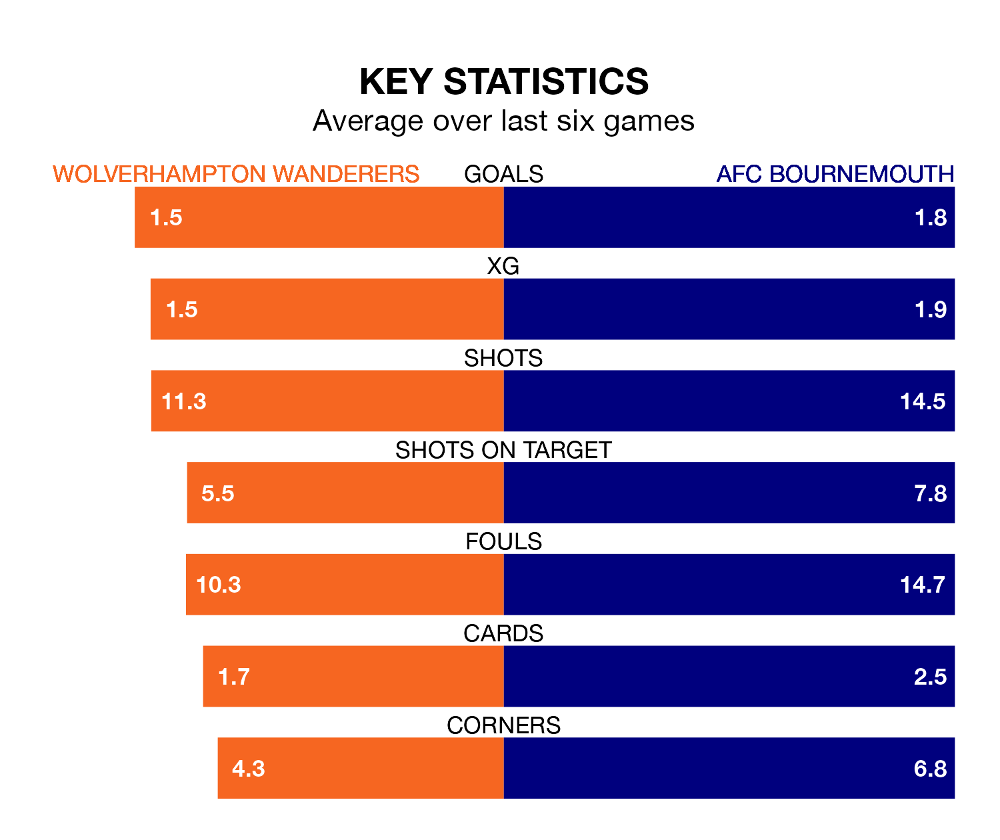

Wolverhampton Wanderers host AFC Bournemouth on Friday at the Molineux Stadium in the Premier League.
In their last league match, on Saturday, Wolves beat Fulham 2-1 at home, with their goal scored by Rayan Aït Nouri.
Bournemouth also won, 4-3 at home against Luton Town on Wednesday, with Antoine Semenyo (two), Dominic Solanke and Illia Zabarnyi on the scoresheet.
In the last 10 years, Wolves and Bournemouth have played each other on nine occasions. Wolves won four of them, Bournemouth three, and they drew twice.
On average, Wolves scored 1.1 goals and the Cherries 0.9 in those matches.
Their last meeting was on October 21, when Wolves won 2-1 away.
In Solanke-Mitchell, Bournemouth have one of the league's most on-form strikers so far this season. He has notched 15 goals in 28 appearances, to sit third in the scoring charts.
His goal rate of one every 167 minutes is slightly quicker than that of Hee-Chan Hwang, Wolves's top scorer with a goal every 162 minutes, and a total of 10 goals in 22 games.
With 41 goals in 28 games so far this season, the Cherries are scoring at below the league average rate with 1.5 goals per game. And they are conceding more than average, letting in 52 goals at a rate of 1.9 per game.
The home team are also below average scorers, with 1.5 goals per game, compared to a league average of 1.6. They have conceded 1.6 goals per game.
Wolves are in reasonable form in the Premier League, with four wins and two losses from their last six games.
With two wins and two draws over that period, the visitors' form is worse – they have taken eight points from 18, compared to Wolves's 12.
Bournemouth are 13th in the table after 28 games, of which they have won nine and drawn eight, earning 35 points.
The hosts are four places ahead of Bournemouth in ninth, with 12 wins and five draws putting them on 41 points.
Updated: 15:10 (UTC), 15/03/24